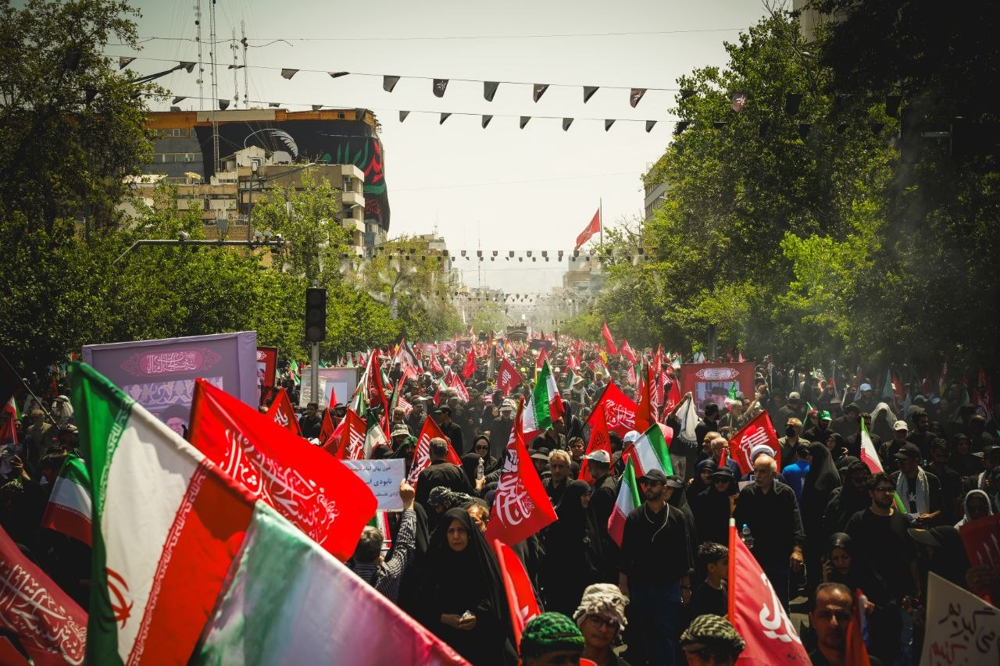
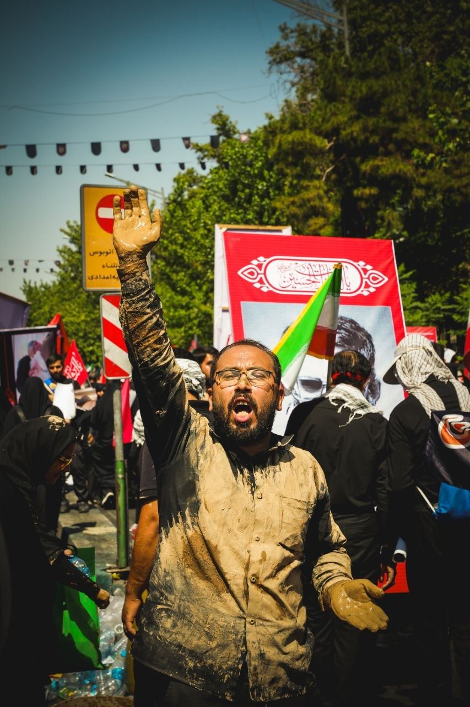

ARCHIVE / 01—40
حرکت کنیدمانیفست
«هر عکس، شاهدیست از لحظهای که دیگر تکرار نمیشود.»
نگاهی مستند به آدمها، نشانهها و جریان زندگی؛ از ازدحام خیابان تا سکوت یک چهره.
آرشیو منتخب
قابها
برای دیدن هر تصویر در ابعاد کامل، روی آن کلیک کنید.

قاب برگزیده
01در قلب
روایت
عکاسی برای من ثبتِ ظاهر رویداد نیست؛ نزدیکشدن به ضربان لحظه است.
دیدن تمام مجموعه ←درباره عکاس
پشتِ
دوربین
اینجا آرشیو رسمی آثار علیاکبر است؛ مجموعهای زنده از عکاسی مستند، خیابانی و آیینی که با هر روایت تازه ادامه پیدا میکند.
تصاویر، آدمها را نه بهعنوان بخشی از پسزمینه، بلکه بهعنوان قلب تپندهٔ هر داستان دنبال میکنند.
علیاکبر PHOTOGRAPHER